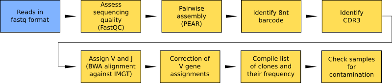

Welcome to RESEDA’s documentation!¶
REpertoire SEquencing Data Analysis
Data analysis workflow for T- and B-cell receptor repertoire sequencing. The workflow identifies clones and their frequency from next generation sequencing of repertoires and includes steps for quality control and bias correction.
